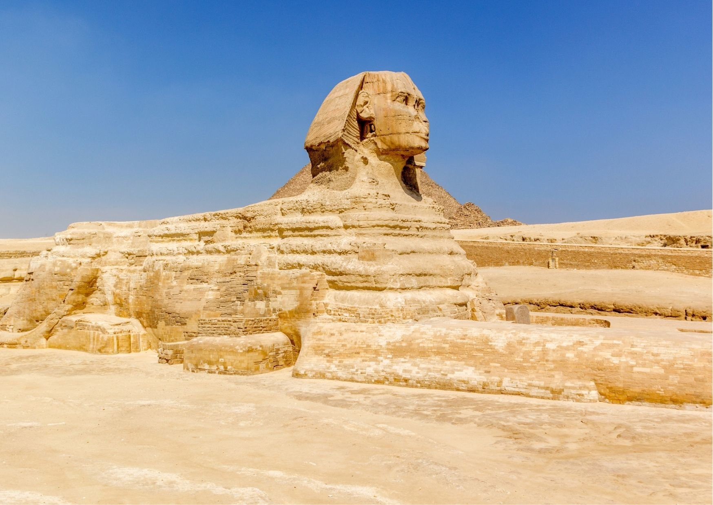
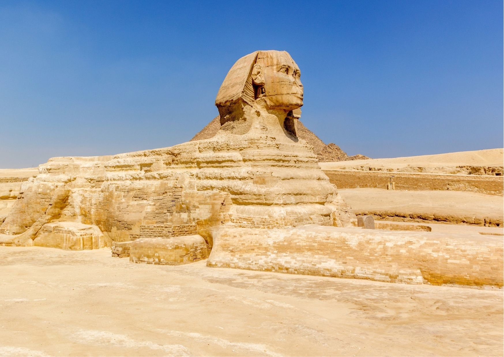
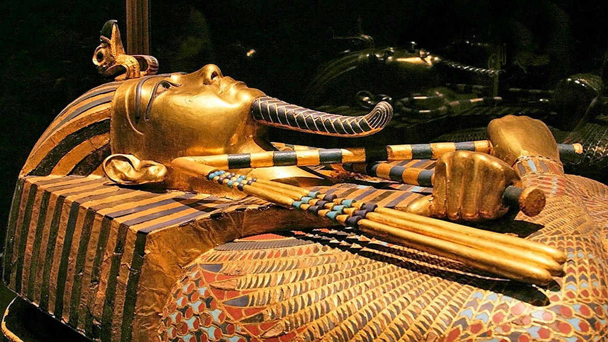
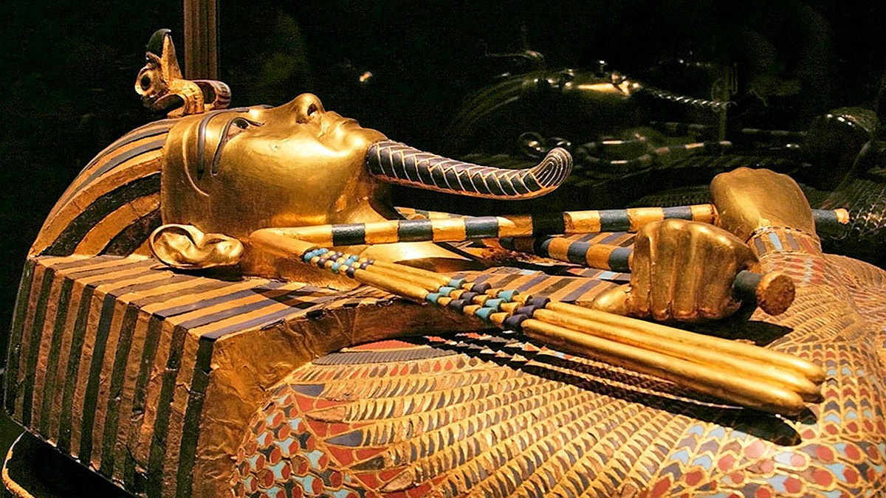

Եգիպտոսը արաբախոս աշխարհում մշակութային միտումներ սահմանողն է։ Արաբական և մերձավորարևելյան ժամանակակից մշակույթը մեծապես կրում է եգիպտական գրականության, երաժշտության, ֆիլմերի և հեռուստատեսության ազդեցությունը։ Եգիպտոսը տարածաշրջանում առաջատար դեր է ունեցել 1950-ական և 1960-ական թվականներին՝ արաբախոս աշխարհում ամրապնդելով եգիպտական մշակույթի կայացումը[98]։ Եգիպտական ինքնությունը զարգացել է շրջափակման երկար ժամանակահատվածի ընթացքում՝ ներառելով իսլամը, քրիստոնեությունը և հուդայականությունը և նոր լեզուն՝ արաբերենը և դրա խոսակցական ժառանգը՝ եգիպտական արաբերենը, որը հիմնված է բազմաթիվ հին եգիպտական բառերի վրա[99]։ 19-րդ դարասկզբին գիտնական Ռիֆաա Ռաֆի ալ-Տահտաուին վերականգնել է Հին Եգիպտոսի հանդեպ հետաքրքրությունը։ Տահտաուին կրթական նորարար Ալի Մուբարաքի հետ հիմնադրել է բնիկ եգիպտագիտության դպրոցը, որը ոգեշնչում էր փնտրում միջնադարյան եգիպտացի գիտնականների համար, ինչպիսիք են Ալ-Սույութին և Ալ-Մաքրիզին, որոնք ուսումնասիրել են Եգիպտոսի պատմությունը, լեզուն և հնությունները[100]։ Եգիպտոսի վերածնունդը իր գագաթնակետին է հասել 19-րդ դարի վերջին և 20-րդ դարասկզբին՝ շնորհիվ Մուհամմադ Աբդոյի, Ահմեդ Լութֆի էլ-Սայեդի, Մուհամմադ Լութֆին Գումահի, Թաուֆիկ ալ-Հաքիմի, Սալամա Մոուսսայի, Տահա Հուսեյնի և Մահմուդ Մուխթարի[101]։ Եգիպտոսի մայրաքաղաք Կահիրեն արաբական կինոարտադրության և ժամանակակից արաբական երաժշտության կենտրոն է։
.jpg)
.jpg)
.jpg) 

Եգիպտացիներին է պատկանում առաջին խոշոր քաղաքակրթություններից մեկը, որում սահմանվել է արվեստի և ճարտարապետության ձևավորման տարրեր։ Եգիպտական կապույտը, որը հայտնի է նաև որպես կալցիումի պղնձի սիլիկատ, ավազի, պղնձի և նատրոկաուստիկ սոդայի մանրացումից ու դրանց տաքացումից ստացվող գունանյութ է, որն օգտագործել են եգիպտացիները հազարավոր տարիներ։ Այն համարվում է առաջին սինթետիկ գունանյութը[102]։ Այն հաճախ էր կիրառվում գերեզմանաքարերի նկարների և սգո առարկաների դեպքում՝ պաշտպանելու մահացածին անդրշիրիմյան կյանքում։ Որպես փարավոններին մատուցված ծառայություն՝ պատերի նկարազարդումները ստեղծված էին տեսողական կանոնների և նշանակությունների խիստ օրենքներով։ Եգիպտական քաղաքակրթությունը հայտնի է դարձել իր վիթխարի բուրգերով, տաճարներով և փառահեղ դամբարաններով։ Ճանաչված օրինակներ են Ջոսերի բուրգը, որը կառուցել է Իմհոթեպ ճարտարապետը մոտավորապես մ․ թ․ ա․ 2780 թվականին, Սֆինքսը և Աբու Սիմբելի տաճարները։ Եգիպտական ժամանակակից արվեստը համաշխարհային արվեստի պես բազմազան է՝ Հասան Ֆաթհիի ու Ռամզես Ուիսա Ուասեֆի կիրառական ճարտարապետությունից մինչև Մահմուդ Մուխթարի արձաններ ու Իսահակ Ֆանուսի ղպտիական տարբերվող պատկերագրություն։ Կահիրեի օպերային թատրոն Եգիպտոսի մայրաքաղաքի կատարողական արվեստի հիմնական օջախն է։
 

.jpg)
Egypt Post ընկերությունը Եգիպտոսում պատասխանատու է փոստային ծառայությունների մատուցման համար։ Այն հիմնադրվել է 1865 թվականին և համարվում է երկրի ամենահին պետական ինստիտուտներից մեկը։ Եգիպտոսն այն 21 պետություններից մեկն է, որոնք նախաձեռնել են Համընդհանուր փոստային միության հիմնադրումը, որը ներկայումս կոչվում է Գլխավոր փոստային միություն։ Վերջինս ստեղծվել է Բեռնի կամ Համաշխարհային փոստային կոնվենցիայի շրջանակներում։ Սոցիալական մեդիա 2018 թվականի սեպտեմբերին Եգիպտոսի խորհրդարանը ընդունել է որոշում, որը հնարավորություն է տալիս իշխանություններին մոնիթորինգի տակ պահել օգտատերերի գործողություններն սոցիալական ցանցերում, որն իրականացվում է համացանցի խորացող վերահսկողության շրջանակներում[104][105]։